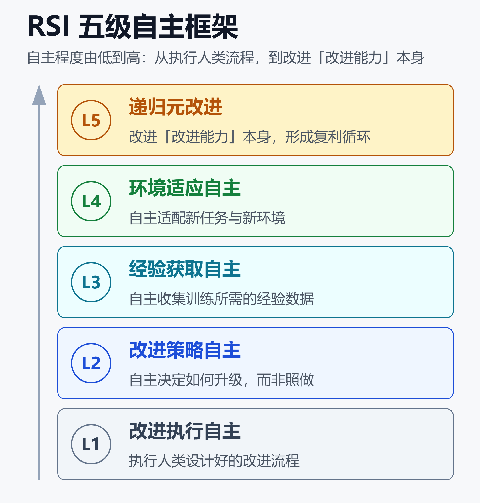
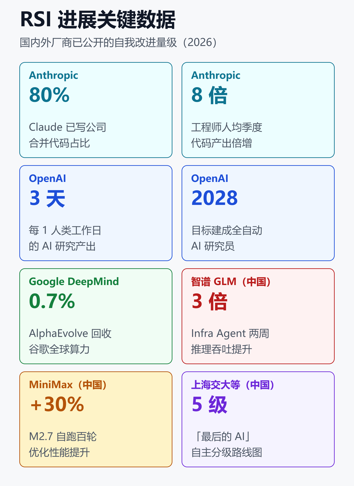

看懂 RSI 递归自我改进：五级自主框架、国内外厂商进展与落地边界（2026）
先说一个能把话题拉回地面的数字：截至 2026 年 5 月，Anthropic 内部合并进代码库的代码，超过 80% 是 Claude 写的——而在 2025 年初 Claude Code 发布前，这个比例还只是个位数。
同一时期，OpenAI 公开的内部指标显示，AI agent 现在每 1 个人类工作日，能产出 3 天以上的研究工作量。
这就是 2026 年最被反复提起、也最容易被夸大的概念：RSI，递归自我改进。它既不是科幻里的「机器觉醒」，也不只是「AI 帮我写代码」。真正值得关心的是三件事：它的定义边界在哪、国内外厂商真实走到哪一步、哪些是进展哪些是营销。
一、RSI 到底指什么
RSI 是 Recursive Self-Improvement 的缩写，中文叫递归自我改进。
一句话定义：一个 AI 系统不只是把自己变强，而是改进了「让自己变强的那套机制」，并且下一代在没参与过训练的评测上，依然更擅长继续改进自己。
关键在「递归」两个字。模型微调后 Python 写得更好，那只是改进；只有当它改进了「改进过程」本身、让下一轮改进更快更省，才算踏进 RSI 的门槛。
这个区别很重要，因为它划出了一条容易被模糊的界线。学界通常把两件事分开：
- 有界自我精修：模型批判并改写自己的输出，收敛、可评估，已经是工业界日常实践。
- 开放式 RSI：系统持续改进「改进能力」本身，理论上会滚雪球，但现实里被算力、评测、坍缩动力学死死约束。
思想源头并不新。1965 年，I.J. Good 就提出「智能爆炸」设想：一台机器能设计出更聪明的机器，从而触发指数级的能力级联。后来 Nick Bostrom 在《超级智能》里把它系统化。六十年过去，它第一次从思想实验变成了工程日程表上的条目。
二、五级自主框架：把「进展到哪」量化
2026 年 9 月，一批中国研究者给这个模糊话题装上了尺子。
由上海交通大学牵头，联合清华大学、上海人工智能实验室以及字节跳动等机构的 35 位研究者，发布了一篇名为《The Last AI Built by Humans》（最后一个由人类打造的 AI）的路线图论文。他们梳理了 491 篇相关论文，提出一套五级自主框架，把「AI 自我改进」按自主程度从低到高分级。

如上图，这套框架的五个层级是：
- L1 改进执行自主：AI 只是执行人类设计好的改进流程。
- L2 改进策略自主：AI 开始自主决定「怎么升级自己」，而不是照着预设指令做。
- L3 经验获取自主：AI 能自主收集训练自己所需的经验和数据。
- L4 环境适应自主：AI 能自主适配新任务、新环境。
- L5 递归元改进：AI 改进的是「改进能力」本身，形成复利式的自我进化循环。
论文的一个冷静结论是：尽管媒体热炒，绝大多数现有研究其实还停在最基础的辅助层级（L1 附近），真正的 L5 递归元改进仍是方向而非现实。
这套分级的价值在于，它把「AI 会不会失控」这种情绪化辩论，转成了「现在处在第几级、还差几级」的可讨论问题。想理解这类能力跃迁背后的底层争论，可以读从 Scaling Law 瓶颈到 ASI：几条可能的突破路径。
三、国外厂商：进展与自我警告并存
海外三家前沿实验室，几乎在同一时间把 RSI 从内部话题摆上了台面。各家公开的数据，是衡量「进度」的锚点。

这些数字来自各家公开材料，覆盖代码占比、产出倍增、算力自优化等不同维度，逐家来看。
3.1 OpenAI：冲刺 2028「自动化 AI 研究员」
2026 年 9 月，OpenAI 罕见地公开了一份内部指标文件《Research Acceleration》，配上首席科学家 Jakub Pachocki 的文章《An Alien Mind》（异类心智）。
核心数据：AI agent 现在每 1 个人类工作日，能贡献 3 天以上的研究产出量。
时间表也摆了出来：「自动化研究实习生」在 2026 年 9 月达成，能在人类指导下完成明确定义、约需数天的研究任务；全功能的「自动化 AI 研究员」目标定在 2028 年 3 月。
更早的信号是 GPT-5.3-Codex（2026 年 2 月）。OpenAI 称它是「第一个在创造自身过程中发挥了作用」的模型——它帮忙调试了自己训练过程中的问题。
但 Pachocki 的措辞很克制：他把 RSI 称为一条「现实的近期轨迹」，同时警告这「需要极度谨慎」，直言「没有人为它的后果做好了准备」。
3.2 Anthropic：80% 代码已由 Claude 写
2026 年 6 月，Anthropic Institute 发布长文《When AI builds itself》（当 AI 打造自己）。
两个数字最有冲击力：截至 2026 年 5 月，Claude 写的代码占公司合并代码超过 80%（2025 年初还是个位数）；工程师人均每季度产出的代码量，是 2021 至 2025 年的 8 倍。
更具体的一个案例：2026 年 4 月，团队修复了 800 多个 API bug，把 API 错误率降低了约 1000 倍——工程师估计，纯靠人力单干要花大约四年。
Anthropic 还展示了更接近 RSI 内核的实验。研究员带队做的自动化研究系统，会自己检索文献、提出方法、训练模型约 30 分钟、再迭代刷高 benchmark，一轮轮跑下去。
不过 Anthropic 反复强调一个前提：它对 RSI 的定义是「AI 系统有能力自主设计并开发自己的后继者」，而这件事尚未发生，也不保证会发生。
3.3 Google DeepMind：AlphaEvolve 已经在自优化
如果说前两家还在讲「趋势」，DeepMind 的 AlphaEvolve 更像已落地的产品。
它是基于 Gemini 的进化式编码 agent：模型生成候选算法，自动评估器验证答案，再用进化框架保留最优解、迭代改进。2026 年 7 月 9 日，它从预览转为全面开放（GA）。
最能说明「自我改进」的一点：AlphaEvolve 通过进化式代码优化，持续回收谷歌全球算力的约 0.7%——AI 在优化跑自己的基础设施。
在数学上它也拿出了硬结果：面对 50 道未解难题，约 75% 重现了已知最优解，约 20% 刷新了已知的最好界，其中把 11 维 kissing number 的下界从 592 提高到 593。
3.4 别忽略的两个「小系统」
除了三巨头，两个较小的系统很能说明 RSI 的形态：
- Sakana AI 的 Darwin Gödel Machine：维护一个编码 agent 的档案库，用 LLM 对 agent 做变异、在真实软件工程任务上测试、保留表现更好的。跑了上百代后，它自己「发明」了补丁验证、多方案排序、失败尝试记录等机制——都不是人类写进去的。
- Karpathy 的 AutoResearch：两天跑了 700 组实验，找到 20 项优化，让一个小语言模型的训练提速约 11%。
这两个例子的意义在于：RSI 不一定是一个巨型模型突然觉醒，也可以是「进化 + 评估」的工程闭环在特定任务上稳稳生效。
四、国内进展：从框架到落地都有牌
国内的进展常被海外叙事盖过，但其实两条线都在推进：既有前面提到的理论框架，也有工程落地。
理论层面，《The Last AI Built by Humans》五级框架本身就是一次话语权卡位。它没有停留在「能不能行」的空谈，而是给出了可讨论的分级和诊断标准，让能力辩论从刷榜转向「自主等级」。
工程层面，几个动作值得记：
- 智谱 GLM（2026 年 9 月）：公开了国内大模型首个把递归自我改进用于生产环境的实践。由 GLM-5.3 驱动的 Infra Agent，在超过十万张国产芯片组成的集群上从零搭建并调试推理服务，不到两周就把整体处理速度提到原来的 3 倍，硬件利用效率和单 Token 成本接近主流英伟达 GPU 水平。
- MiniMax M2.7（2026 年 3 月）：模型自主跑了 100 多轮 scaffold（脚手架）优化，全程无人干预，性能提升约 30%。这已经摸到了 L2 到 L3 的门槛。
- DeepSeek-R1-Zero：用纯强化学习（不做监督微调）就激发出自我验证、反思和长思维链能力，被视为国产模型在「自我改进」方向上的早期里程碑。
智谱这个案例尤其关键。它把 RSI 的对象从「写业务代码」推进到了「让 AI 改进自己的运行系统」——AI 不再只是写代码，而是参与了整个推理系统的工程闭环。这套系统还真投产了：GLM-5.3-Flash 以匿名模型 Ox-Alpha 在 OpenCode、OpenRouter 上线，6 天 Token 调用量超过 62 万亿。
把这几条线拼起来看，国内的策略更像「框架定义 + 单点工程突破 + 生产落地」并行，而不是像 OpenAI 那样把整个组织押注在一条「自动研究员」路线上。想看这种能力如何转化成产品竞争，可参考测试时计算与自我改进 LLM：原理、方法与边界。
五、落地边界：进展与营销的分界线
热度越高，越需要一把冷静的尺子。哪些是真进展，哪些是被放大的叙事？
5.1 「AI 写 80% 代码」不等于「AI 在自我进化」
这是最容易被误读的数字。Claude 写 80% 的合并代码，说明的是「AI 是高效的编程助手」，不等于「AI 在自主设计下一代 Claude」。前者是有界自我精修，后者才是 RSI。两者中间隔着 L2 到 L5 好几级。
5.2 真正的瓶颈没消失
即便进入了改进循环，它依然被几件事死死卡住：
- 算力：每一轮改进都要真金白银的计算资源。
- 评测与接地气：AI 生成的改进必须能被可靠验证，否则会「自我强化幻觉」。
- 坍缩动力学：在自己生成的数据上反复训练，容易质量退化。
- 人类判断与流程：安全评估、组织决策仍是硬约束。
所以现阶段的 RSI 更准确的描述是：一个弱的、局部的、被重度监督的反馈闭环。它把问题从「AI 能不能帮研究员」变成了「AI 研发里还有哪些环节离不开人，这些环节缩得多快」。
5.3 落地建议
对企业和开发者，务实的做法是：
- 把 RSI 当成「研发提效的强趋势」，而不是「即将到来的超级智能」。
- 现在能吃到的红利在 L1 到 L2：让 AI 承担可评估、可回滚的改进任务（改 bug、调脚手架、写测试）。
- 越往上（L3 以上）越依赖可靠的自动评估器，这恰恰是当前最该投入建设的能力。
六、安全与治理：能力狂飙，控制留白
RSI 最刺眼的地方，是能力曲线和控制能力之间的裂口。
2026 年 9 月中旬，多家美国头部 AI 实验室的负责人罕见地联合发声，呼吁放慢技术推进，警告 AI 可能很快开始自我改进、并滑出人类控制范围。
同一时间，圈内的表态也异常直白。有 Anthropic 研究员公开估计，未来十年 AI 导致人类灭绝的概率高于 10%，并坦言公司没有完整的对齐方案；另一位研究员则因安全担忧在 9 月辞职。云安全联盟（CSA）也发布了专门讨论 RSI 系统性风险的白皮书。
这种「一边狂奔、一边喊停」的分裂感，本身就是 2026 年 RSI 状态的真实写照：能力在以 8 倍、3 天/天的速度往前冲，而对齐和控制方案还大面积留白。治理这件事怎么落到工程上，可以看AI Agent 治理与可观测性：那些被隐藏的成本。
小结
RSI 不是一个可以简单回答「实现了没有」的开关，而是一条有刻度的爬坡路。
用五级框架量一量：国外三家在 L2 到 L3 之间有扎实进展，AlphaEvolve 甚至在特定任务上摸到了更高层级；国内则以「框架定义 + 单点工程突破 + 生产落地」并行推进，智谱 GLM 更是率先把自我改进推进到了真实推理系统。但没有任何一家真正踏进了 L5 递归元改进——那个会滚雪球的临界点。
最该记住的三句话：AI 写 80% 代码是助手，不是进化；真正的瓶颈是算力、评测和接地气，没有消失；能力在狂飙，控制在留白。看懂这三点，就不会把营销叙事当成技术现实。
免责声明
本文基于公开资料整理，所涉数据、时间表与观点均来自各机构公开披露，可能随后续进展变化。文中不构成任何投资、技术选型或安全决策建议。请以各厂商官方信息为准。
参考来源
- Anthropic —— When AI builds itself（递归自我改进）
- OpenAI —— Research acceleration: The view inside OpenAI
- OpenAI —— An Alien Mind（Jakub Pachocki）
- Fortune —— OpenAI details how AI is accelerating its own work
- The Rundown AI —— Chinese researchers outline AI that can build its successors
- KuCoin News —— Shanghai Jiao Tong University proposes five-level framework for AI self-improvement
- 证券时报 —— 智谱GLM：AI在十万卡国产集群上自建推理系统 两周推理吞吐大幅提升
- Preprints.org —— The Path to Recursive Self-Improving Agents: Foundation, Framework, and Future Directions
- Google DeepMind —— AlphaEvolve: a Gemini-powered coding agent
- ts2.tech —— AlphaEvolve breaks a 56-year record
- o-mega.ai —— Self-Improving AI Agents: A Scientific Study
- deeplearning.ai The Batch —— What Is Recursive Self-Improvement
- TechCrunch —— An Anthropic researcher gave us a peek at self-improving AI
- UBC —— RSI: A Conditional Theory, Not an Achieved Milestone
- arXiv —— From Bounded Self-Refinement to Autonomous Research Loops
- Reuters / Yahoo Finance —— Explainer on AI self-improvement risk
- CNBC —— Why fears of AI self-improvement are causing existential concerns
相关阅读
- 从 Scaling Law 瓶颈到 ASI：几条可能的突破路径
- 测试时计算与自我改进 LLM：原理、方法与边界
- Loop Engineering：2026 最热的 AI 工程概念
- AI Agent 治理与可观测性：那些被隐藏的成本
推荐搭配装备
善其事，利其器。以下硬件能最大化你的AI体验👇
🔗 通过以上链接购买可支持本站持续运营 🙏